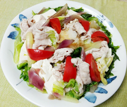

冷しゃぶ風サラダ
- 調理時間：30分
- （一人当たり）
- カロリー：294kcal
- たんぱく質：19.0g
- 脂質：16.2g
- 炭水化物：17.6g
- 塩分：1.0g


＜2人分＞
- 豚肉
- 100g
- キャベツ
- 100g
- モヤシ
- 50g
- レタス
- 2～3枚
- ミョウガ
- 1個
- 豆腐
- 200g
- おろし大根
- 少々
- トマト
- 1個
- ポン酢
- 適量


- (1)キャベツは熱湯でサッと茹で、すぐに冷水にさらし、水気を絞り、食べやすい大きさに切る。
(2)モヤシも熱湯でサッと茹で、水気を絞る。レタスは手でちぎる。ミョウガは斜め細切りにする。
(3)トマトはくし切りにする。大根はおろし大根にする。 - 豆腐は食べやすい大きさにきり、茹でてから冷ましておく。
- 豚肉は、一口大に切り、熱湯でさっとゆがき、冷水にとる。
- すべての材料をお皿に盛り付け、食べるときにポン酢をかける。
冷しゃぶ風サラダ
だんだんと暑さが増し、日が長くなるにつれ夏の到来を感じます。例年にない疲労を感じたり、だるい、眠いなどの症状が増えてはいませんか？
これを解消するには、ビタミンB1の補給です。ビタミンB1は、糖質がエネルギーに変換されるのを手伝う優秀なビタミンで疲労回復ビタミンと呼ばれています。ビタミンB1が不足すると体内で糖化現象が起こり倦怠感、集中力低下といった症状が起こりやすくなります。その他、エネルギー代謝の過程で発生する「乳酸」が溜まるのを防ぐ効果もあります。豚肉にはビタミンB1がたくさん含まれていますので、疲れがたまりやすいこの時期は積極的に摂りたい食材です。食欲が落ちやすい時期ですが、ひとさらに多品目盛り付けてバランスを整えましょう。